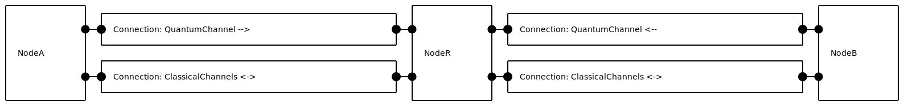

Repeater with purification
This example contains multiple quantum network protocols (Protocol).
The protocols build on each other: purify depends on entanglenodes,
while repeater depends on both.
Entangle nodes protocol
The EntangleNodes protocol creates entanglement between two remote nodes linked by connection containing a quantum channel. One of the nodes (A) holds a source of entangled qubits. Both nodes store their resulting qubit(s) on a quantum memory and schedule an event once it is ready for retrieval.

This network is constructed using the following function:
def example_network_setup(prep_delay=5, qchannel_delay=100, num_mem_positions=3):
"""Create an example network for use with the entangling nodes protocol.
Parameters
----------
prep_delay : float, optional
Delay used in the source in this network. Default is 5 [ns].
qchannel_delay : float, optional
Delay of quantum channel. Default is 100 [ns].
num_mem_positions : int
Number of memory positions on both nodes in the network. Default is 3.
Returns
-------
:class:`~netsquid.components.component.Component`
A network component with nodes and channels as subcomponents.
Notes
-----
This network is also used by the matching integration test.
"""
# Setup nodes:
network = Network("Entangle_nodes")
node_a, node_b = network.add_nodes(["node_A", "node_B"])
node_a.add_subcomponent(QuantumProcessor(
"QuantumMemoryATest", num_mem_positions, fallback_to_nonphysical=True))
node_b.add_subcomponent(QuantumProcessor(
"QuantumMemoryBTest", num_mem_positions, fallback_to_nonphysical=True))
node_a.add_subcomponent(
QSource("QSourceTest", state_sampler=StateSampler([ks.b00]),
num_ports=2, status=SourceStatus.EXTERNAL,
models={"emission_delay_model": FixedDelayModel(delay=prep_delay)}))
# Create and connect quantum channel:
qchannel = QuantumChannel("QuantumChannelTest", delay=qchannel_delay)
port_name_a, port_name_b = network.add_connection(
node_a, node_b, channel_to=qchannel, label="quantum")
# Setup Alice ports:
node_a.subcomponents["QSourceTest"].ports["qout0"].forward_output(
node_a.ports[port_name_a])
node_a.subcomponents["QSourceTest"].ports["qout1"].connect(
node_a.qmemory.ports["qin0"])
# Setup Bob ports:
node_b.ports[port_name_b].forward_input(node_b.qmemory.ports["qin0"])
return network
If parts of the code above are a bit unclear, it may help to read this part of the tutorial.
The protocol that runs on both nodes A and B will be an EntangleNodes protocol:
class EntangleNodes(NodeProtocol):
"""Cooperate with another node to generate shared entanglement.
... <remaining code omitted>
The protocol will begin generating an entangled pair when a trigger event occurs, and will backlog successive trigger calls so that a new pair will begin to be generated once the first pair is ready. This can be seen in its run() method below where the event expression that starts a new round is yielded on:
def run(self):
while True:
if self.start_expression is not None:
yield self.start_expression
elif self._is_source and self.entangled_pairs >= self._num_pairs:
# If no start expression specified then limit generation to one round
break
for mem_pos in self._mem_positions[::-1]:
# Iterate in reverse so that input_mem_pos is handled last
if self._is_source:
self.node.subcomponents[self._qsource_name].trigger()
yield self.await_port_input(self._qmem_input_port)
if mem_pos != self._input_mem_pos:
self.node.qmemory.execute_instruction(
INSTR_SWAP, [self._input_mem_pos, mem_pos])
if self.node.qmemory.busy:
yield self.await_program(self.node.qmemory)
self.entangled_pairs += 1
self.send_signal(Signals.SUCCESS, mem_pos)
The following script runs an example simulation with a single round of entanglement generation
(i.e. initialising the EntangleNodes protocol without a start_expression):
>>> import netsquid as ns
>>> print("This example module is located at: "
... "{}".format(ns.examples.entanglenodes.__file__))
This example module is located at: .../netsquid/examples/entanglenodes.py
>>> from netsquid.examples.entanglenodes import example_network_setup, EntangleNodes
>>> network = example_network_setup()
>>> protocol_a = EntangleNodes(node=network.subcomponents["node_A"], role="source")
>>> protocol_b = EntangleNodes(node=network.subcomponents["node_B"], role="receiver")
>>> protocol_a.start()
>>> protocol_b.start()
>>> ns.sim_run()
>>> q1, = network.subcomponents["node_A"].qmemory.peek(0)
>>> q2, = network.subcomponents["node_B"].qmemory.peek(0)
>>> print("Fidelity of generated entanglement: {}".format(
... ns.qubits.fidelity([q1, q2], ns.b00)))
Fidelity of generated entanglement: 0.99999...
Purification protocols
Purification protocols are means to improve the fidelity of an already established entangled link.
The python file of this module contains example protocols for entanglement purification using filtering and distillation. In the example below we will focus on filtering.
class Filter(NodeProtocol):
"""Protocol that does local filtering on a node.
This is done in combination with another node.
... <remaining code omitted>
The Filter protocol and the EntangleNodes
protocol are combined as sub-protocols in the FilteringExample protocol:
class FilteringExample(LocalProtocol):
r"""Protocol for a complete filtering experiment.
Combines the sub-protocols:
- :py:class:`~netsquid.examples.entanglenodes.EntangleNodes`
- :py:class:`~netsquid.examples.purify.Filter`
Will run for specified number of times then stop, recording results after each run.
... <remaining code omitted>
To be able to send classical messages back and forth between the nodes, we need to extend our network with a connection,
as can be seen in the example_network_setup() function:
def example_network_setup(source_delay=1e5, source_fidelity_sq=0.8, depolar_rate=1000,
node_distance=20):
"""Create an example network for use with the purification protocols.
Returns
-------
:class:`~netsquid.components.component.Component`
A network component with nodes and channels as subcomponents.
Notes
-----
This network is also used by the matching integration test.
"""
network = Network("purify_network")
node_a, node_b = network.add_nodes(["node_A", "node_B"])
node_a.add_subcomponent(QuantumProcessor(
"QuantumMemory_A", num_positions=2, fallback_to_nonphysical=True,
memory_noise_models=DepolarNoiseModel(depolar_rate)))
state_sampler = StateSampler(
[ks.b01, ks.s00],
probabilities=[source_fidelity_sq, 1 - source_fidelity_sq])
node_a.add_subcomponent(QSource(
"QSource_A", state_sampler=state_sampler,
models={"emission_delay_model": FixedDelayModel(delay=source_delay)},
num_ports=2, status=SourceStatus.EXTERNAL))
node_b.add_subcomponent(QuantumProcessor(
"QuantumMemory_B", num_positions=2, fallback_to_nonphysical=True,
memory_noise_models=DepolarNoiseModel(depolar_rate)))
conn_cchannel = DirectConnection(
"CChannelConn_AB",
ClassicalChannel("CChannel_A->B", length=node_distance,
models={"delay_model": FibreDelayModel(c=200e3)}),
ClassicalChannel("CChannel_B->A", length=node_distance,
models={"delay_model": FibreDelayModel(c=200e3)}))
network.add_connection(node_a, node_b, connection=conn_cchannel)
# node_A.connect_to(node_B, conn_cchannel)
qchannel = QuantumChannel("QChannel_A->B", length=node_distance,
models={"quantum_loss_model": None,
"delay_model": FibreDelayModel(c=200e3)},
depolar_rate=0)
port_name_a, port_name_b = network.add_connection(
node_a, node_b, channel_to=qchannel, label="quantum")
# Link Alice ports:
node_a.subcomponents["QSource_A"].ports["qout1"].forward_output(
node_a.ports[port_name_a])
node_a.subcomponents["QSource_A"].ports["qout0"].connect(
node_a.qmemory.ports["qin0"])
# Link Bob ports:
node_b.ports[port_name_b].forward_input(node_b.qmemory.ports["qin0"])
return network
Resulting in the following network:
{kind=link}
To collect data after each successful purification we add a DataCollector to our simulation:
def example_sim_setup(node_a, node_b, num_runs, epsilon=0.3):
"""Example simulation setup for purification protocols.
Returns
-------
:class:`~netsquid.examples.purify.FilteringExample`
Example protocol to run.
:class:`pandas.DataFrame`
Dataframe of collected data.
"""
filt_example = FilteringExample(node_a, node_b, num_runs=num_runs, epsilon=0.3)
def record_run(evexpr):
# Callback that collects data each run
protocol = evexpr.triggered_events[-1].source
result = protocol.get_signal_result(Signals.SUCCESS)
# Record fidelity
q_A, = node_a.qmemory.pop(positions=[result["pos_A"]])
q_B, = node_b.qmemory.pop(positions=[result["pos_B"]])
f2 = qapi.fidelity([q_A, q_B], ks.b01, squared=True)
return {"F2": f2, "pairs": result["pairs"], "time": result["time"]}
dc = DataCollector(record_run, include_time_stamp=False,
include_entity_name=False)
dc.collect_on(pd.EventExpression(source=filt_example,
event_type=Signals.SUCCESS.value))
return filt_example, dc
Putting it all together you can run an example simulation like this:
>>> import netsquid as ns
>>> print("This example module is located at: {}".format(ns.examples.purify.__file__))
This example module is located at: .../netsquid/examples/purify.py
>>> from netsquid.examples.purify import example_network_setup, example_sim_setup
>>> network = example_network_setup()
>>> filt_example, dc = example_sim_setup(
... network.get_node("node_A"), network.get_node("node_B"), num_runs=1000)
>>> filt_example.start()
>>> ns.sim_run()
>>> print("Average fidelity of generated entanglement with filtering: {}"
... .format(dc.dataframe["F2"].mean()))
Average fidelity of generated entanglement with filtering: ...
Repeater protocol
In this example we will show how to setup a basic repeater network simulation, combining the entangle nodes and purify protocols.
Let A and B be the two nodes to be entangled and R the intermediary node with which they both share a bipartite state. Each node has a quantum processor with a number of memory positions: A and B have two while R has four. A quantum processor is an quantum memory with the ability to run programs on its memory positions, as explained in the quantum processor tutorial section. Next to that, both nodes A and B hold a quantum source. Combined, the network looks like this:
{kind=link}
To create this network with node A, R and B fully linked via classical and quantum
connections we call example_network_setup().
Note that we create the quantum processors with fallback_to_nonphysical=True
resulting in the use of ideal instructions without noise.
def example_network_setup(source_delay=1e5, source_fidelity_sq=0.8, depolar_rate=1000,
node_distance=20):
"""Create an example network for use with the repeater protocols.
Returns
-------
:class:`~netsquid.components.component.Component`
A network component with nodes and channels as subcomponents.
Notes
-----
This network is also used by the matching integration test.
"""
network = Network("Repeater_network")
state_sampler = StateSampler(
[ks.b01, ks.s00],
probabilities=[source_fidelity_sq, 1 - source_fidelity_sq])
node_a, node_b, node_r = network.add_nodes(["node_A", "node_B", "node_R"])
# Setup end-node A:
node_a.add_subcomponent(QuantumProcessor(
"quantum_processor_a", num_positions=2, fallback_to_nonphysical=True,
memory_noise_models=DepolarNoiseModel(depolar_rate)))
source_a = QSource(
"QSource_A", state_sampler=state_sampler, num_ports=2, status=SourceStatus.EXTERNAL,
models={"emission_delay_model": FixedDelayModel(delay=source_delay)})
node_a.add_subcomponent(source_a)
# Setup end-node B:
node_b.add_subcomponent(QuantumProcessor(
"quantum_processor_b", num_positions=2, fallback_to_nonphysical=True,
memory_noise_models=DepolarNoiseModel(depolar_rate)))
source_b = QSource(
"QSource_B", state_sampler=state_sampler, num_ports=2, status=SourceStatus.EXTERNAL,
models={"emission_delay_model": FixedDelayModel(delay=source_delay)})
node_b.add_subcomponent(source_b)
# Setup midpoint repeater node R
node_r.add_subcomponent(QuantumProcessor(
"quantum_processor_r", num_positions=4, fallback_to_nonphysical=True,
memory_noise_models=DepolarNoiseModel(depolar_rate)))
# Setup classical connections
conn_cfibre_ar = DirectConnection(
"CChannelConn_AR",
ClassicalChannel("CChannel_A->R", length=node_distance,
models={"delay_model": FibreDelayModel(c=200e3)}),
ClassicalChannel("CChannel_R->A", length=node_distance,
models={"delay_model": FibreDelayModel(c=200e3)}))
network.add_connection(node_a, node_r, connection=conn_cfibre_ar)
conn_cfibre_br = DirectConnection(
"CChannelConn_BR",
ClassicalChannel("CChannel_B->R", length=node_distance,
models={"delay_model": FibreDelayModel(c=200e3)}),
ClassicalChannel("CChannel_R->B", length=node_distance,
models={"delay_model": FibreDelayModel(c=200e3)}))
network.add_connection(node_b, node_r, connection=conn_cfibre_br)
# Setup quantum channels
qchannel_ar = QuantumChannel(
"QChannel_A->R", length=node_distance,
models={"quantum_loss_model": None, "delay_model": FibreDelayModel(c=200e3)})
port_name_a, port_name_ra = network.add_connection(
node_a, node_r, channel_to=qchannel_ar, label="quantum")
qchannel_br = QuantumChannel(
"QChannel_B->R", length=node_distance,
models={"quantum_loss_model": None, "delay_model": FibreDelayModel(c=200e3)})
port_name_b, port_name_rb = network.add_connection(
node_b, node_r, channel_to=qchannel_br, label="quantum")
# Setup Alice ports:
node_a.subcomponents["QSource_A"].ports["qout1"].forward_output(
node_a.ports[port_name_a])
node_a.subcomponents["QSource_A"].ports["qout0"].connect(
node_a.qmemory.ports["qin0"])
# Setup Bob ports:
node_b.subcomponents["QSource_B"].ports["qout1"].forward_output(
node_b.ports[port_name_b])
node_b.subcomponents["QSource_B"].ports["qout0"].connect(
node_b.qmemory.ports["qin0"])
# Setup repeater ports:
node_r.ports[port_name_ra].forward_input(node_r.qmemory.ports["qin0"])
node_r.ports[port_name_rb].forward_input(node_r.qmemory.ports["qin1"])
return network
Nodes A and R and nodes B and R both generate entanglement following the
EntangleNodes and Distil or
Filter purification protocols.
To do the entanglement swapping we define a Repeater protocol.
class Repeater(NodeProtocol):
"""Entangles two nodes given both are entangled with an intermediary midpoint node.
... <remaining code omitted>
The Repeater protocol take over from entanglement generation and purification as follows. Each node waits for qubit input on their quantum memory before beginning. Node R, once ready, performs a Bell measurement on its two qubits and sends the results via a classical channel to node B. When B has received its qubit input and the repeater results, it applies the teleport corrections and signals its qubit is available as output on its quantum memory.
To conveniently bundle all these local protocols together we define the non-local RepeaterExample protocol,
which stores them as sub-protocols and does the linking of success signals to the starting event expressions.
class RepeaterExample(LocalProtocol):
"""Protocol for a complete repeater experiment including purification.
Will run for specified number of times then stop, recording results after each run.
Parameters
----------
node_A : :py:class:`~netsquid.nodes.node.Node`
Node to be entangled via repeater.
Must be specified before protocol can start.
node_B : :py:class:`~netsquid.nodes.node.Node`
Node to be entangled via repeater.
Must be specified before protocol can start.
node_R : :py:class:`~netsquid.nodes.node.Node`
Repeater node that will entangle nodes A and B.
Must be specified before protocol can start.
num_runs : int
Number of successful runs to do.
purify : "filter" or "distil" or None, optional
Purification protocol to run. If None, no purification is done.
epsilon : float
Parameter used in filter's measurement operator.
Subprotocols
------------
entangle_A : :class:`~netsquid.examples.entanglenodes.EntangleNodes`
Entanglement generation protocol running on node A to entangle with R.
entangle_Ra : :class:`~netsquid.examples.entanglenodes.EntangleNodes`
Entanglement generation protocol running on node R to entangle with A.
entangle_B : :class:`~netsquid.examples.entanglenodes.EntangleNodes`
Entanglement generation protocol running on node B to entangle with R.
entangle_Rb : :class:`~netsquid.examples.entanglenodes.EntangleNodes`
Entanglement generation protocol running on node R to entangle with B.
purify_A : :class:`Filter` or :class:`Distil`
Purification protocol running on node A to purify entanglement with R.
purify_Ra : :class:`Filter` or :class:`Distil`
Purification protocol running on node R to purify entanglement with A.
purify_B : :class:`Filter` or :class:`Distil`
Purification protocol running on node B to purify entanglement with R.
purify_Rb : :class:`Filter` or :class:`Distil`
Purification protocol running on node R to purify entanglement with B.
repeater_R : :class:`~netsquid.examples.repeater.Repeater`
Repeater protocol running on node R to do midpoint entanglement swap.
repeater_B : :class:`~netsquid.examples.repeater.Repeater`
Repeater protocol running on node B to do endpoint correction.
"""
def __init__(self, node_A, node_B, node_R, num_runs, purify="filter", epsilon=0.3):
super().__init__(nodes={"A": node_A, "B": node_B, "R": node_R},
name="Repeater with purification example")
self.num_runs = num_runs
purify = purify.lower()
if purify not in ("filter", "distil"):
raise ValueError("{} unknown purify option".format(purify))
self._add_subprotocols(node_A, node_B, node_R, purify, epsilon)
# Set entangle start expressions
start_expr_ent_A = (self.subprotocols["entangle_A"].await_signal(
self.subprotocols["purify_A"], Signals.FAIL) |
self.subprotocols["entangle_A"].await_signal(self, Signals.WAITING))
self.subprotocols["entangle_A"].start_expression = start_expr_ent_A
start_expr_ent_B = (self.subprotocols["entangle_B"].await_signal(
self.subprotocols["purify_B"], Signals.FAIL) |
self.subprotocols["entangle_B"].await_signal(self, Signals.WAITING))
self.subprotocols["entangle_B"].start_expression = start_expr_ent_B
# Set purify start expressions
self._start_on_success("purify_A", "entangle_A")
self._start_on_success("purify_Ra", "entangle_Ra")
self._start_on_success("purify_B", "entangle_B")
self._start_on_success("purify_Rb", "entangle_Rb")
# Set repeater start expressions
self._start_on_success("repeater_B", "purify_B")
start_expr_repeater = (self.subprotocols["repeater_R"].await_signal(
self.subprotocols["purify_Ra"], Signals.SUCCESS) &
self.subprotocols["repeater_R"].await_signal(
self.subprotocols["purify_Rb"], Signals.SUCCESS))
self.subprotocols["repeater_R"].start_expression = start_expr_repeater
def _start_on_success(self, start_subprotocol, success_subprotocol):
# Convenience method to set subprotocol's start expression to be success of another
self.subprotocols[start_subprotocol].start_expression = (
self.subprotocols[start_subprotocol].await_signal(
self.subprotocols[success_subprotocol], Signals.SUCCESS))
... <remaining code omitted>
The run() method takes care of iterating for the specified number of runs and returning a final success signal for each run containing statistics for that run.
def run(self):
self.start_subprotocols()
for i in range(self.num_runs):
start_time = sim_time()
self.subprotocols["entangle_A"].entangled_pairs = 0
self.subprotocols["entangle_B"].entangled_pairs = 0
self.send_signal(Signals.WAITING)
yield (self.await_signal(self.subprotocols["purify_A"], Signals.SUCCESS) &
self.await_signal(self.subprotocols["repeater_B"], Signals.SUCCESS))
signal_A = self.subprotocols["purify_A"].get_signal_result(
label=Signals.SUCCESS, receiver=self)
signal_B = self.subprotocols["repeater_B"].get_signal_result(
label=Signals.SUCCESS, receiver=self)
result = {
"pos_A": signal_A,
"pos_B": signal_B,
"time": sim_time() - start_time,
"pairs_A": self.subprotocols["entangle_A"].entangled_pairs,
"pairs_B": self.subprotocols["entangle_B"].entangled_pairs,
}
self.send_signal(Signals.SUCCESS, result)
To set up the simulation we use the example_sim_setup() function including
a data collector storing the squared fidelity after each success:
def example_sim_setup(node_A, node_B, node_R, num_runs, purify="filter", epsilon=0.3):
"""Example simulation setup of repeater protocol.
Returns
-------
:class:`~netsquid.examples.repeater.RepeaterExample`
Example protocol to run.
:class:`pandas.DataFrame`
Dataframe of collected data.
"""
repeater_example = RepeaterExample(
node_A, node_B, node_R, num_runs=num_runs, purify=purify, epsilon=0.3)
def record_run(evexpr):
# Record a repeater run
protocol = evexpr.triggered_events[-1].source
result = protocol.get_signal_result(Signals.SUCCESS)
# Record fidelity
q_a, = node_A.qmemory.pop(positions=[result["pos_A"]])
q_b, = node_B.qmemory.pop(positions=[result["pos_B"]])
f2 = qapi.fidelity([q_a, q_b], ks.b00, squared=True)
return {"F2": f2,
"pairs_A": result["pairs_A"],
"pairs_B": result["pairs_B"],
"time": result["time"]}
dc = DataCollector(record_run, include_time_stamp=False, include_entity_name=False)
dc.collect_on(pd.EventExpression(
source=repeater_example, event_type=Signals.SUCCESS.value))
return repeater_example, dc
The following script runs an example simulation:
>>> import netsquid as ns
>>> print("This example module is located at: "
... "{}".format(ns.examples.repeater.__file__))
This example module is located at: .../netsquid/examples/repeater.py
>>> from netsquid.examples.repeater import example_network_setup, example_sim_setup
>>> network = example_network_setup()
>>> repeater_example, dc = example_sim_setup(
... network.get_node("node_A"), network.get_node("node_B"),
... network.get_node("node_R"), num_runs=1000)
>>> repeater_example.start()
>>> ns.sim_run()
>>> print("Average fidelity of generated entanglement via a repeater "
... "and with filtering: {}".format(dc.dataframe["F2"].mean()))
Average fidelity of generated entanglement via a repeater and with filtering: ...